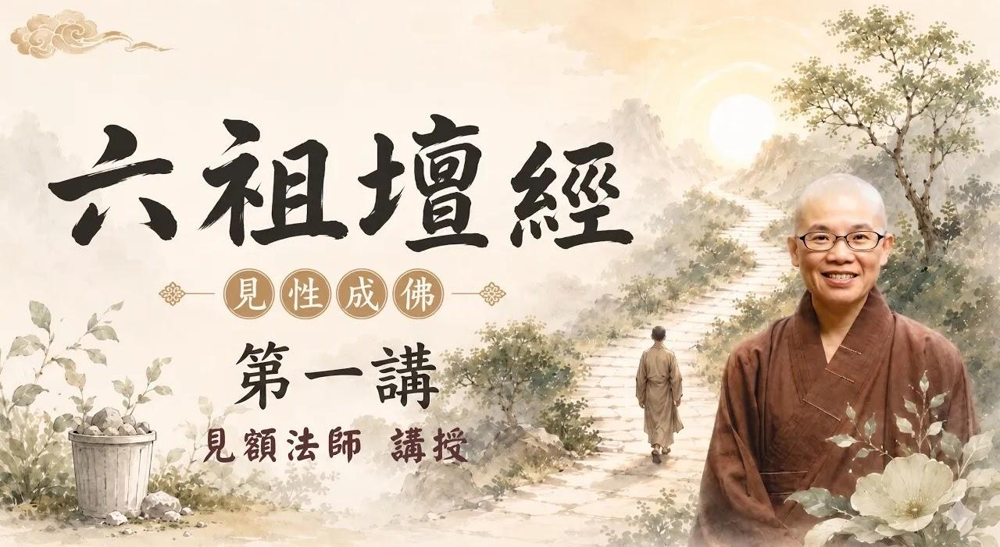
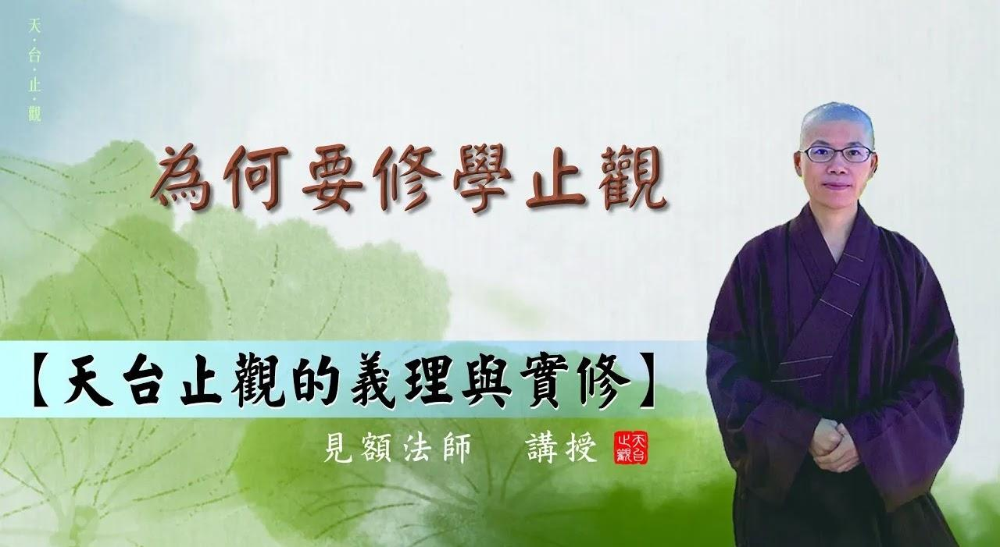
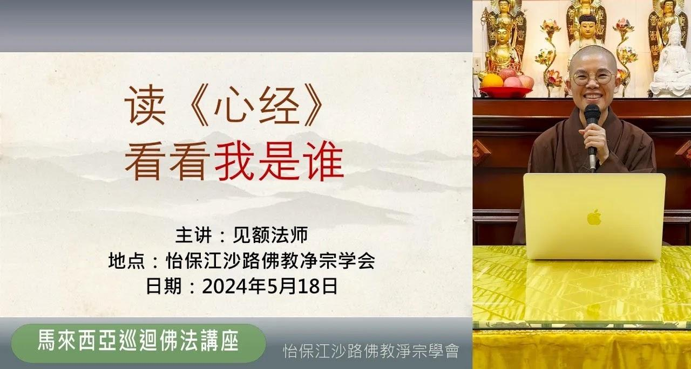
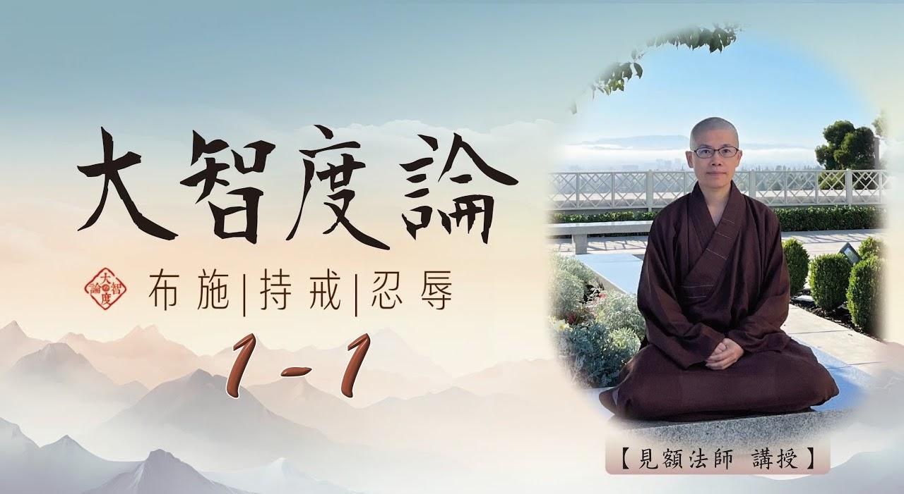
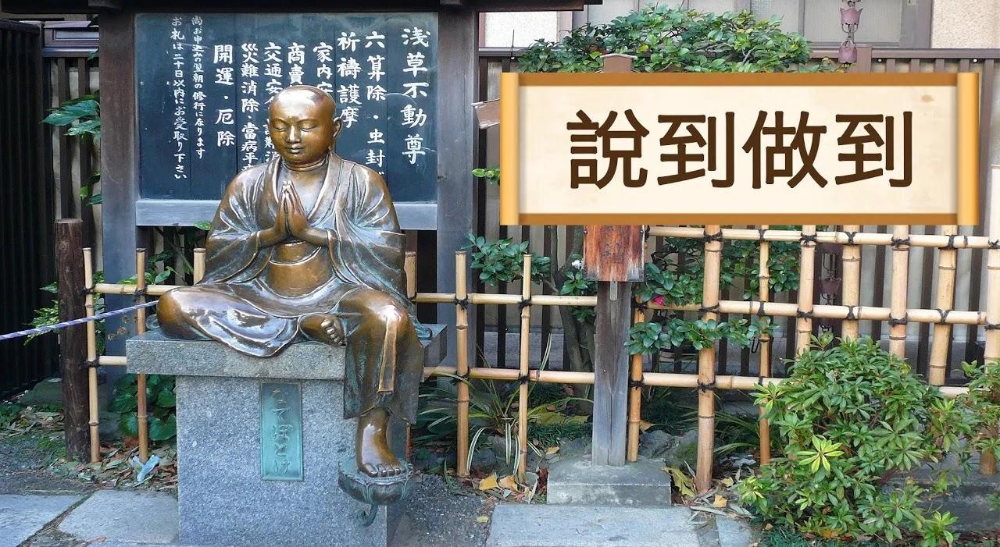
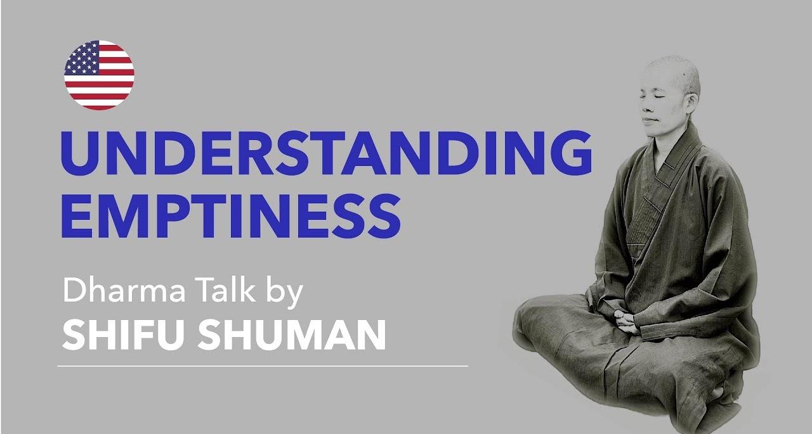

殊曼讀心
shifu-shuman.org
☰
首頁
見額法師
法訊
佛法覺音
短開示
菩薩覺旅
殊曼覺文
菩提覺見
出版著作
法語桌布下載
佛法覺音
見額法師講經開示 · 點圖即看
❋ ❋ ❋

▶
六祖壇經
▶
法華經全景
▶
不在乎不要怕

▶
天台教觀
▶
禪修靜坐
▶
法華經精要
▶
空中法華
▶
始終心要今說
▶
在家菩薩戒
▶
八關齋戒

▶
專題講座、法會開示
▶
佛學教理

▶
大智度論
▶
首楞嚴經 二十五圓通

▶
讀心
▶
知見：佛法釋疑

▶
Buddha-Dharma in English
▶
線上課程
▶
佛經中的梵字音譯